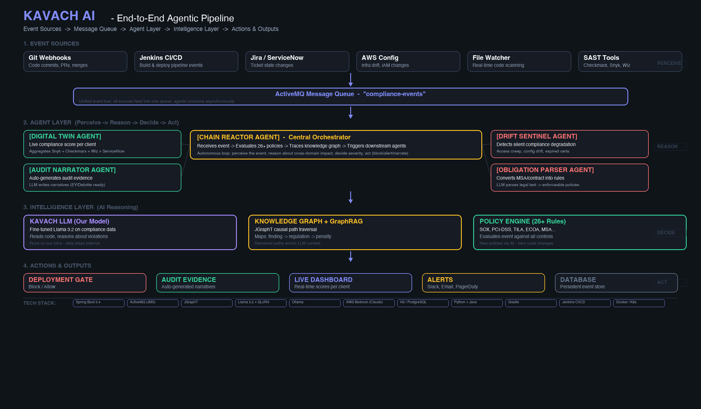

• SOX team finds issues in annual audit
• Security team scans weekly
• Legal reviews contracts quarterly
• Fair lending tested semi-annually
• Violations found MONTHS later
• Different teams, different tools
• No cross-domain reasoning
• No per-client context
• Reactive, not predictive
• $50K+ per missed violation
• AI reasons across ALL domains simultaneously
• Per-engagement compliance twin
• Predicts impact BEFORE deploy
• Generates audit evidence in real-time
• Zero compliance surprises

kavach-compliance-v1 — runs on our infra| Question | Using GPT/Claude API | KAVACH LLM |
|---|---|---|
| Who sees client code? | OpenAI / Anthropic | Nobody (runs on our GPU) |
| Cost @ 5K events/day | ~$6,000/month | ~$1,000/month (1 GPU) |
| Where does it learn? | General internet data | OUR audit findings & controls |
| Can we improve it? | No (prompt only) | Yes — retrain anytime |
| Who owns the model? | OpenAI / Anthropic | Hexaware (our IP) |
Maintains live compliance state for each client engagement. Aggregates findings from Snyk, Checkmarx, Wiz, ServiceNow into a unified compliance score.
Takes ONE event and propagates impact across all 6 domains simultaneously. Uses Policy Engine + GraphRAG for causal reasoning.
Autonomously generates audit-ready evidence narratives from system activity. Uses LLM to write like a senior auditor (EY/Deloitte ready).
Detects silent compliance degradation before auditors do. Catches access creep, config drift, expired certifications, orphaned permissions.
Reads MSA/contract text and extracts machine-readable obligations. Maps clauses to controls automatically using LLM.
Feed raw regulation text → AI parses into live policies. Add entire frameworks (DORA, HITRUST) with ZERO code changes.
Llama 3.2 (fine-tuned)
QLoRA Training
Ollama Runtime
AWS Bedrock (Claude)
Spring Boot 3.4
ActiveMQ (JMS)
H2 Database
JPA/Hibernate
JGraphT
Causal Path Analysis
GraphRAG Retrieval
Knowledge Graph
Real-time Dashboard
Auto-refresh (no reload)
5 Interactive Views
Click-to-expand Panels
AI Scanner (Ollama)
Entropy-based secrets
SAST integration
File System Watcher
Webhook ingestion
JMS message queue
Event-driven agents
Async processing
Gradle Multi-project
Alpha/Beta/Gamma
Selective Deploy
Jenkins Pipeline
AWS (Bedrock, S3)
Docker / K8s ready
Zero external deps
Self-contained demo
| Tool | What It Does | What's Missing | Cost to Client |
|---|---|---|---|
| Vanta / Drata | Automates SOC 2 evidence | Single-company only. No per-client context for IT services. | $25K-50K/yr |
| ServiceNow GRC | Aggregates risk data | No causal reasoning. Doesn't predict what a code change breaks. | $100K-300K/yr |
| Checkmarx / Snyk | Finds code vulnerabilities | No SOX, TILA, or contractual impact. Just "fix this bug." | $50K-150K/yr |
| Fieldguide | Helps auditors organize | Doesn't generate evidence. Auditors still write manually. | $30K-80K/yr |
| KAVACH AI | Cross-domain AI reasoning | Nothing missing — covers all gaps above in one platform. | ~$1K/mo infra |